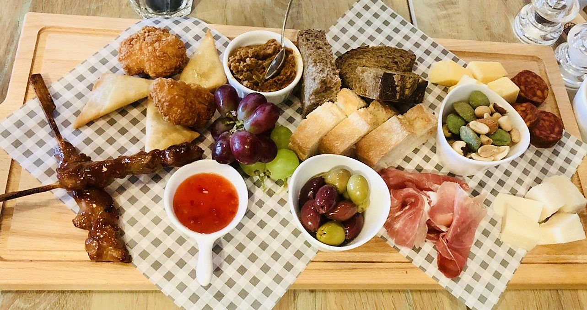
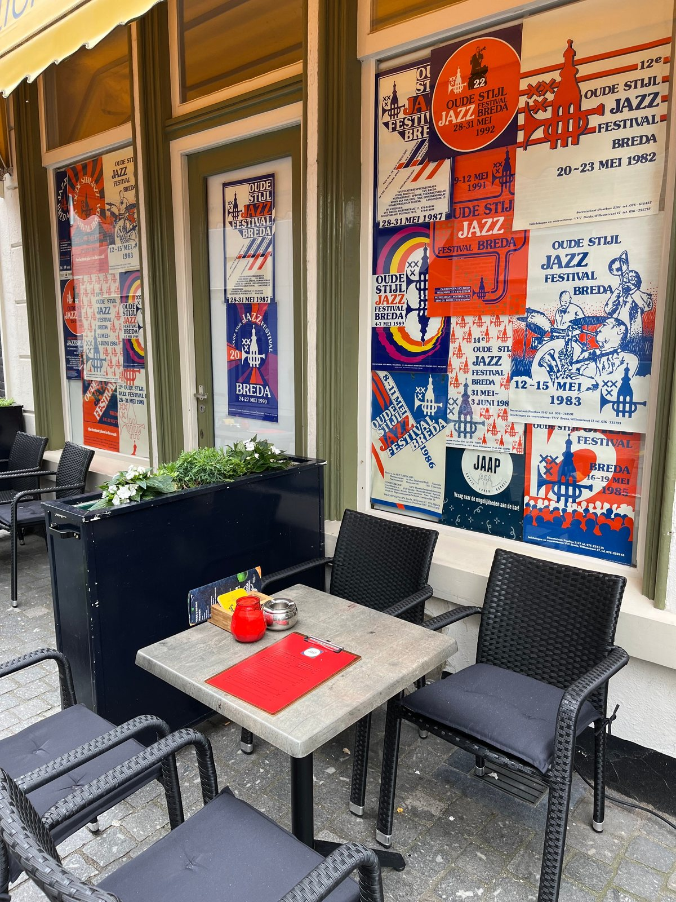
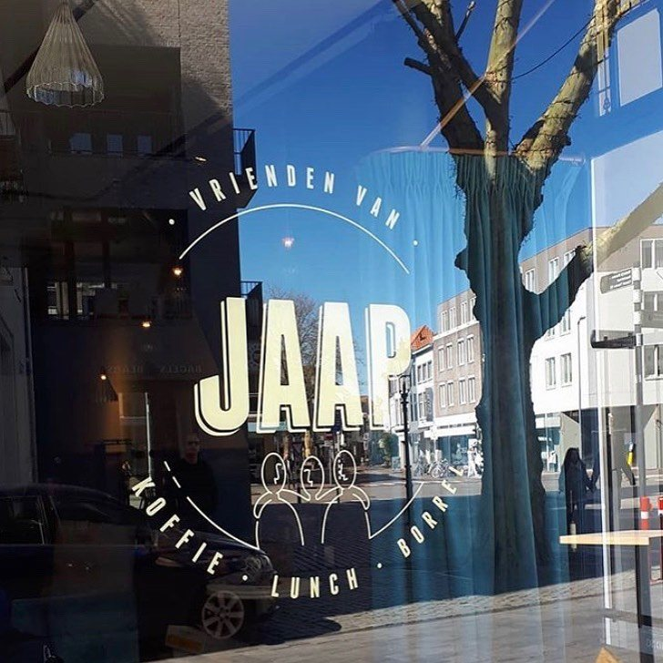
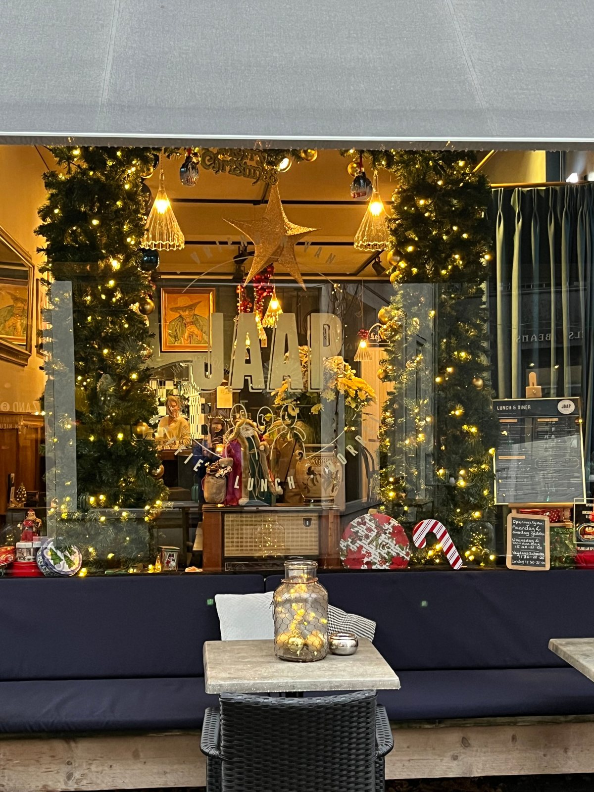
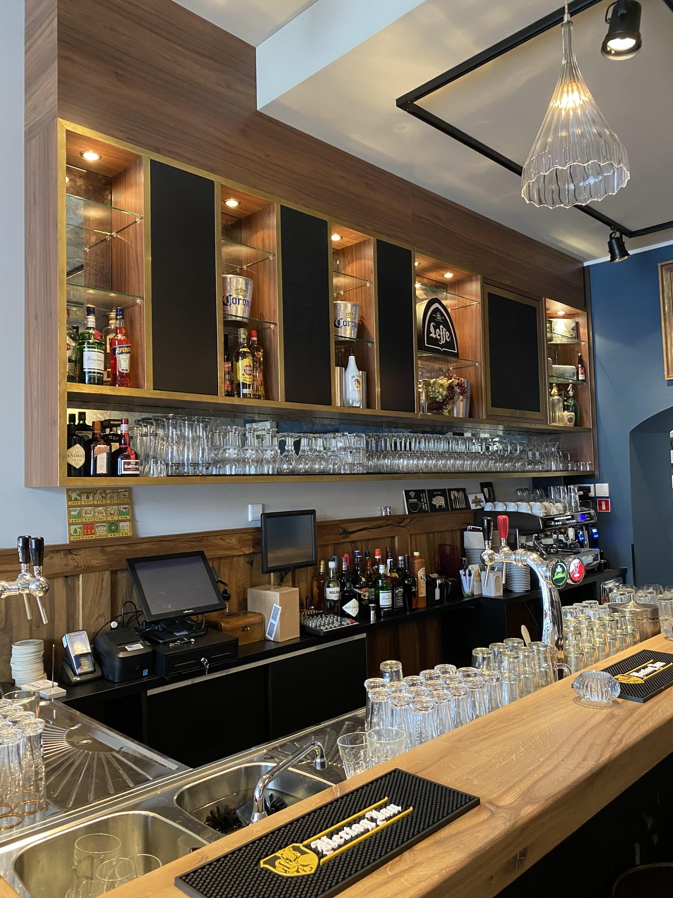
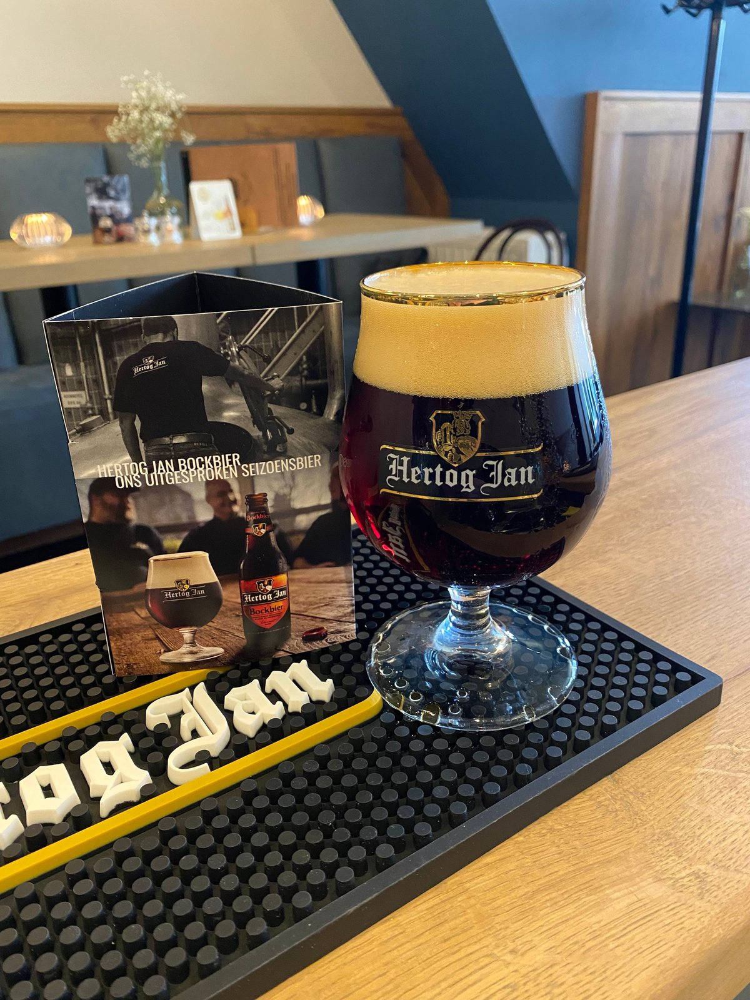

Koffie, lunch en borrel aan de Veemarktstraat
Een goede kop koffie, een lekkere lunch of een gezellige borrel. Binnen in ons café of buiten op het terras, iedere donderdag tot en met zondag.
Great people and just what I enjoy most: a small menu with good food.Jan-Volkert M. · Google
Binnen of op het terras
Midden in de Veemarktstraat, met een terras voor de deur.



Wat onze gasten zeggen
Great people and just what I enjoy most: a small menu with good food. Do try the latte macchiato.Jan-Volkert M. · Google
Food was excellent, very clean, reasonable prices and friendly staff.James C. · Google
We enjoyed their lovely homemade style pies (veggie or meat) with salad and chips. Reasonably priced too.Suzi M. · Google
The food was delicious, the beer was cold and got a perfect service.Karolis · Google

Over Vrienden van Jaap
Vrienden van Jaap is het café van Jaap en Linda. Jaap werkte ruim dertig jaar in de Bredase horeca voordat hij in 2020 zijn eigen zaak opende, in het pand van de vroegere bistro Biarritz.
De naam komt uit zijn eigen netwerk: vrienden hielpen mee met een kleine crowdfunding. Dat gevoel houden we vast. Persoonlijke aandacht en gezelligheid, zodat iedereen zich hier thuis voelt.

Iets te vieren?
Een verjaardag, jubileum, bedrijfsborrel of huwelijk. Vier het bij ons, in besloten kring.
- Besloten feest voor 40 tot 55 personen
- Zaterdagavond vanaf 20:30 of zondagmiddag vanaf 16:00
- Borrelen met meer dan 12 personen? Laat het ons even weten
Vertel ons je wensen, dan kijken we samen of we er een mooi feest van kunnen maken.
Reserveren
Reserveren kan voor de lunch op zaterdag en zondag. Voor de borrel of een hapje in de avond loop je gewoon binnen.
Openingstijden
Wegens vakantie zijn we gesloten van 31 december 2026 tot en met 4 februari 2027.